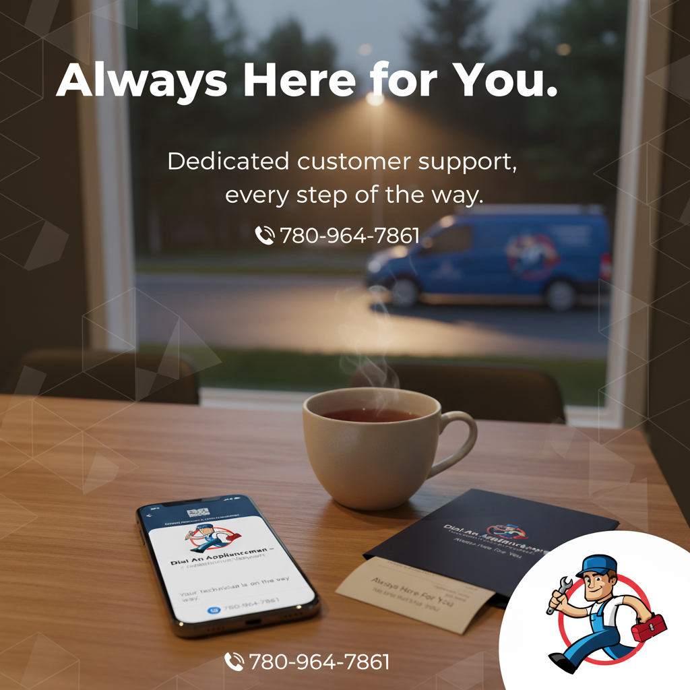
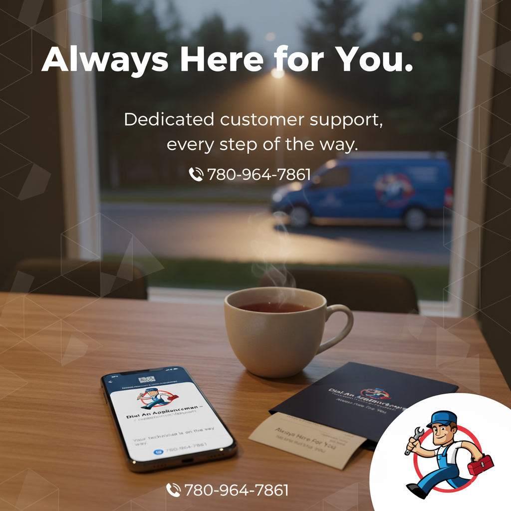

Dial An Appliance Man
Location: Calgary, Airdrie, and Spruce Grove, Canada.
The Business: An expert local service provider specializing in high-end appliance repairs for homeowners.
Why they approached us: Despite years of great service, the company was struggling to be found by new customers online. They relied heavily on expensive paid ads and were virtually invisible in local organic search results.

Initial audit showing limited visibility for local search terms.
Professional Brand Upgrade
To compete with national brands, we upgraded their digital image using Advanced AI tools. We generated high-quality, professional service imagery and city-specific descriptions to build immediate trust with local customers.
 

Custom AI-generated assets created to build brand authority.
Real Business Value
Our goal was to make the website a lead-generation machine. In 3 months, we stabilized their presence and increased their digital footprint significantly.

Verified data showing consistent growth in online reach.